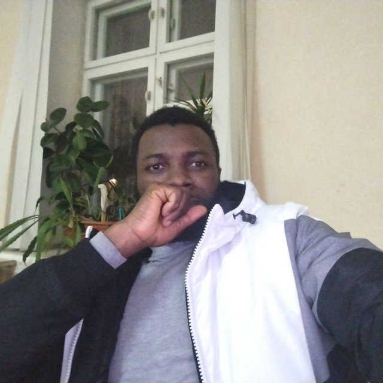
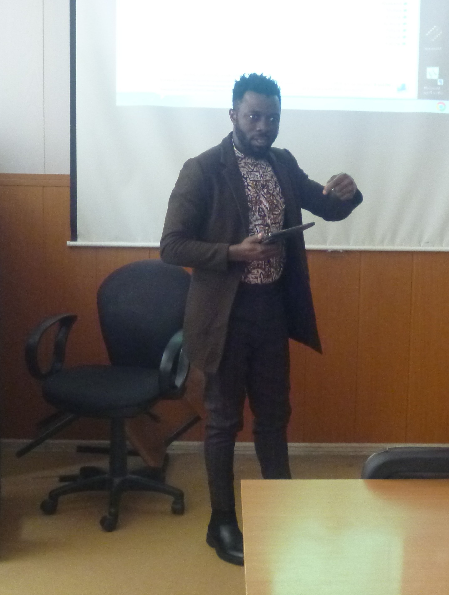

Chercheur & Ingénieur en Systèmes d'Information. Spécialiste en Cybersécurité Autonome, Cloud Computing & AIOps.
📌 Problématique
"Comment concevoir un système de sécurité autonome, auto-adaptatif et basé sur l'IA capable de détecter et neutraliser les menaces en temps réel dans les environnements Kubernetes, tout en minimisant l'intervention humaine et les faux positifs ?"
⭐ Votre contribution est précieuse pour ma recherche. Les réponses sont anonymes et utilisées uniquement dans le cadre de ma thèse de master.

Mon expertise combine l'analyse de données avancée avec des systèmes de sécurité autonomes basés sur l'IA. J'étudie actuellement les architectures Zero-Trust et les environnements Kubernetes cloud hybrides.
📄 Confirmation officielle : Présentation au forum STNO-2026 (RSREU)
William Patrick FONKOU — professionnel rigoureux avec plus de 7 ans d'expertise transversale en gouvernance des données, coordination opérationnelle et support IT.
Actuellement en Master à l'Université d'État de Radio-ingénierie de Ryazan (RSREU), je développe une thèse innovante sur les frameworks Zero-Trust basés sur l'AIOps.
🎯 Recherche activement un stage au Canada / Amérique du Nord en cybersécurité, ingénierie de données ou infrastructure cloud.
Je suis disponible immédiatement pour un stage académique ou professionnel au Canada ou en Amérique du Nord.